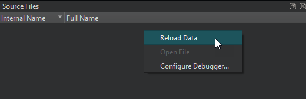

Viewing Source Files
The Source Files view lists all the source files included in the project. If you cannot step into an instruction, you can check whether the source file is actually part of the project, or whether it was compiled elsewhere. The view shows the path to each file in the file system.

Right-click the view to select the following actions:
- Reload data
- Open the selected file
- Set debugger preferences
By default, the Source Files view is hidden. To show it, select it in Views on the debugger toolbar.
External Sources
To enable the debugger to step into the code and display the source code when using a copy of the source tree at a location different from the one at which the libraries were built, you can map source paths to target paths in Preferences > Debugger > General:

For more information, see Mapping Source Paths.